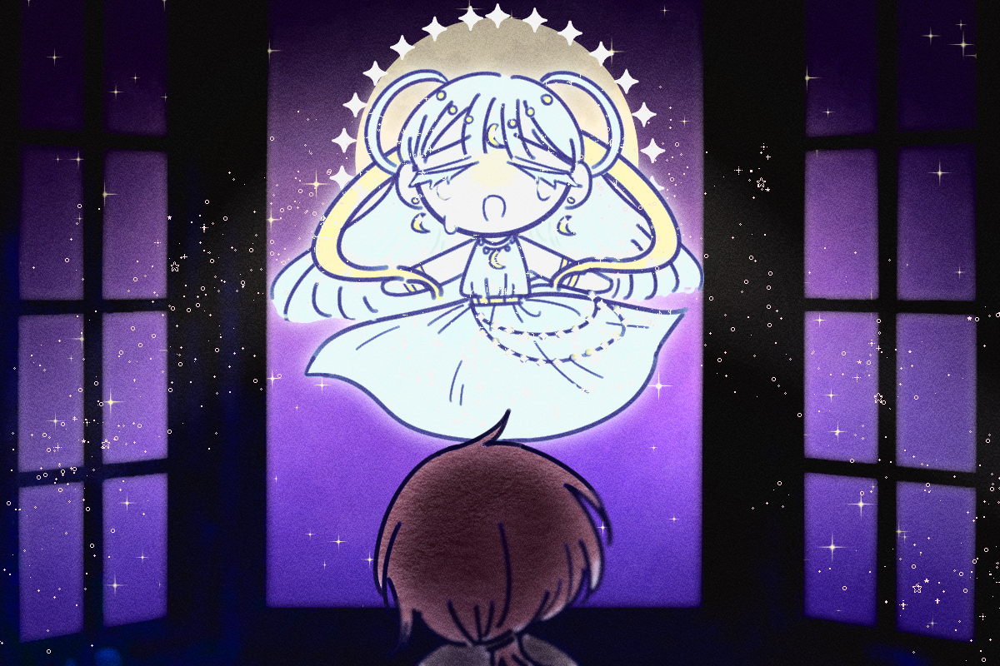

어느 날, 여느때와 다름없이 행복 없는 잠이 들지 못한 채
뒤척이며 울고 있었습니다.
그때 창문 결로 어떤 목소리가 달빛처럼 쏟아지는 게 느껴졌습니다.
그건 귀가 아니라 마음으로 들리는 소리였죠.
“너의 슬픔이 매일 밤을 가득 채워서 나도 슬픔을 감출 수가 없어.
눈물을 거두고 다시 웃으며 살아가 줘. 부탁이야.”
“애너벨이 저에게는 달이었고, 해였으며, 세상이었습니다.
달님. 지금 저에게 달빛이 무슨 의미가 있을까요?”
“너의 슬픔을 멈추게 하려면 내가 사라지거나,
아니면 그 아이를 구하는 수 밖에 없겠구나.
좋아. 내가 애너벨을 구할 수 있는 방법을 알려줄게.”
나는 달님에게 그 방법을 여쭈고, 그에 달께서는 답해주셨습니다.
“나는 분명히 봤어.
천사들이 애너벨의 영혼을 바다 밑의 악마들 옆에 위치한 감옥에 가두었지.
그러니 천사들에게 가 열쇠를 얻은 다음,
악마들에게서 애너벨을 구해내자.
언덕 위의 숲으로 가면 천사들의 나라로 가는 길이 있을테야.
이제 눈물을 멈추겠니?”
